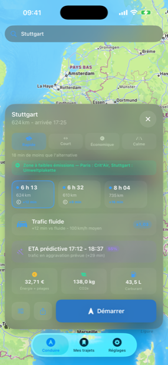
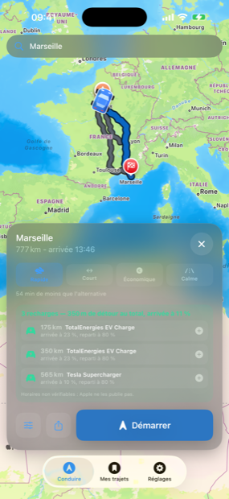

Pourquoi celui-là
Un trajet européen se joue sur ce que personne ne vous dit : qu’il fallait un autocollant avant de prendre l’autoroute autrichienne, qu’à Stuttgart une pastille est obligatoire, qu’en Allemagne votre GPS n’a plus le droit de vous prévenir d’un contrôle, et que l’autoroute vide votre batterie un tiers plus vite que la ville.
WayCar est écrit pour ces moments-là. C’est aussi pour cela qu’il refuse d’afficher certaines choses : une limite de vitesse qu’il ne peut pas vérifier, le nombre de places libres d’un parking, ou l’horaire d’ouverture d’une borne. Apple ne publie pas ces données, et les inventer se paie au péage, au parking ou devant une borne fermée.
À bord
- Quatre itinéraires chiffrésLe plus rapide, le plus court, le plus économique, le plus calme. L’écart s’affiche en minutes et en euros, avant de partir.
- Péages et vignettes par paysLe coût est calculé pays par pays sur les tronçons réellement traversés : barrière en France, autocollant en Autriche, rien en Allemagne.
- Zones à faibles émissionsCrit’Air, Umweltplakette, ZTL : la ville est nommée, le dispositif est nommé dans sa langue.
- Contrôles, selon la loi du paysZone de danger en France, rien du tout en Allemagne et en Suisse, position signalée ailleurs. L’app le dit au passage de la frontière.
- Équipements hiverLoi Montagne II, Winterreifenpflicht, zimska oprema : la règle du pays et ses dates, énoncée comme une règle et non comme un verdict sur votre route.
- Recharge électriqueUn plan qui ne descend jamais sous 10 % de batterie, s’écarte de 2,5 km maximum de la route, et recharge à 80 % plutôt qu’à 100.
- Pause après deux heuresLe conseil de toutes les agences européennes de sécurité routière, dit pendant que vous conduisez, avec les aires encore devant vous.
- Où vous vous êtes garéL’étage, la place, votre note, et le chemin à pied pour y revenir.
- Ferries repérésUne traversée dans l’itinéraire est signalée sur la fiche de route : elle se réserve, et elle coûte.
- Signalements par deux cheminsD’appareil à appareil sur quelques dizaines de mètres — la voiture derrière vous dans un tunnel — et par le réseau pour le bouchon à quarante kilomètres.
- Six voix, trois tonsSobre, complice ou taquin. Le ton change les mots, jamais l’information : la sortie, la rue et le temps perdu sont toujours dits.
- CarPlaySignaler, chercher, reprendre ses destinations. Le téléphone et la voiture guident la même course.
Sur l’écran



Captures réelles de l’application, en français, sur iPhone.
Ce qu’il ne fera pas
WayCar a besoin du réseau pour calculer un itinéraire, chercher une adresse et connaître le trafic. Une fois l’itinéraire calculé, le guidage continue sans réseau : la ligne et les manœuvres sont déjà en mémoire. Ce n’est pas une app hors ligne, et elle ne le prétend pas.
Elle n’affiche pas la limite de vitesse de la route sur laquelle vous roulez — Apple ne la publie pas. Elle affiche les maxima légaux du pays et ne vous avertit que lorsque vous êtes au-dessus du plus élevé d’entre eux.
Elle ne sait pas si une borne de recharge est ouverte, ni s’il reste des places dans un parking, ni ce qu’il coûte. Elle donne le téléphone et la page pour que vous vérifiiez.
Les tarifs de péage, les prix de vignette et les règles hiver sont des chiffres publiés : ils changent. La signalisation au bord de la route fait foi, toujours.
Vos données
Pas de compte, pas d’inscription, pas de publicité, pas de SDK d’analyse. Vos trajets, vos favoris et vos destinations récentes restent sur l’iPhone. Ce qui part vers les autres conducteurs, ce sont vos signalements : un événement arrivé à une route, jamais votre position en direct. L’app sait exporter tout ce qu’elle garde en un fichier lisible, et tout effacer. Voir la politique de confidentialité.
Disponibilité
iPhone, avec CarPlay. Français, anglais, allemand, espagnol et italien — interface, guidage vocal et voix enregistrées. Version 1.1 ; ce qui a changé est dans le journal.